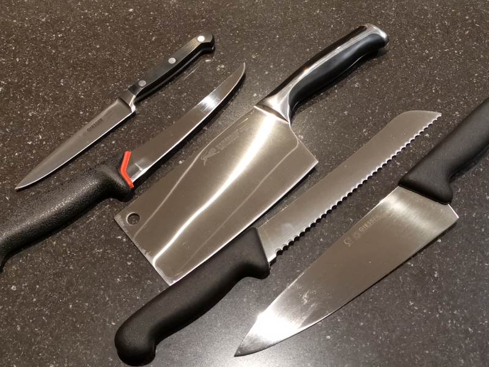
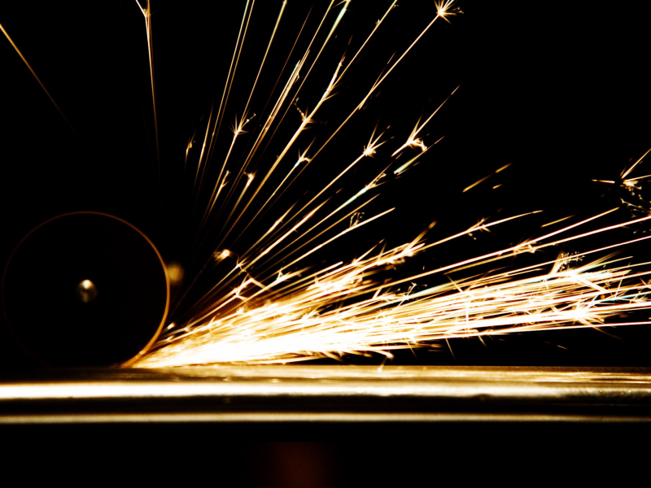
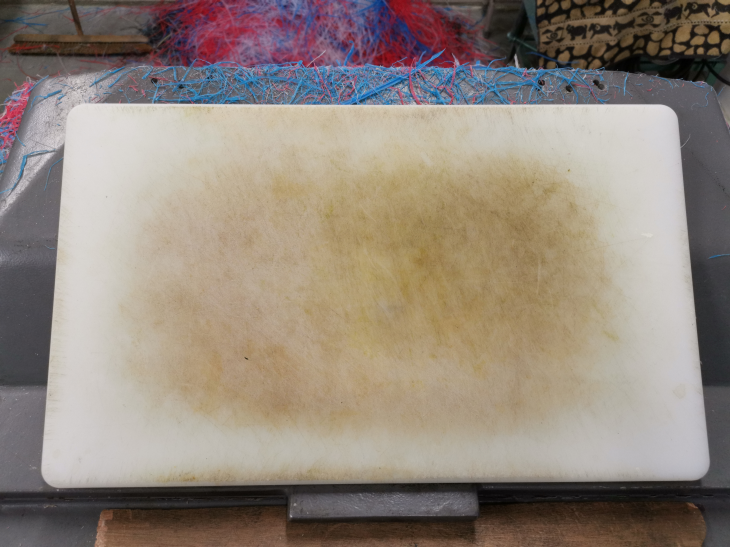
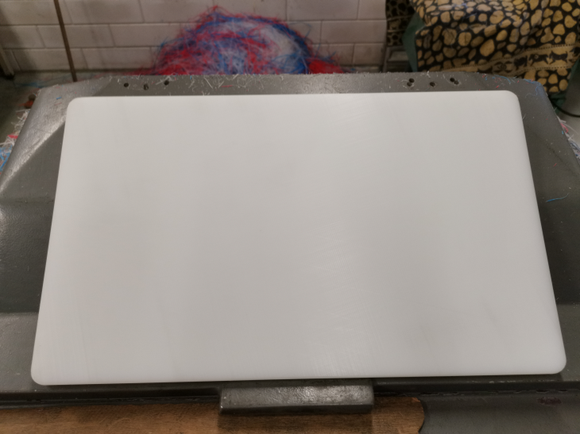
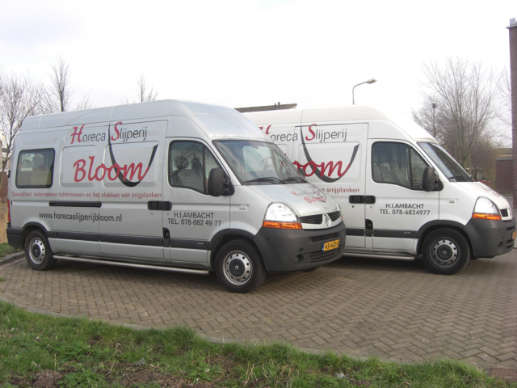
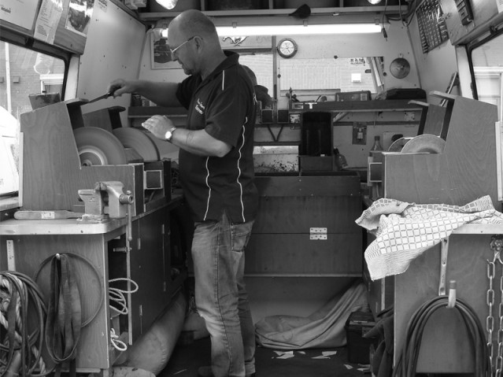

Wij komen naar u toe
De slijper voor al uw messen.
078 682 4977
info@horecaslijperijbloom.nl
U levert uw messen in
U krijgt een leenset
Wij slijpen bij u op locatie
Binnen 1 à 2 uur klaar*
Wat doet Horecaslijperij Bloom?
Wij slijpen alles wat een scherpe rand hoort te hebben. Of het nu gaat om koksmessen, Japanse messen, kartel(brood)messen, tafelmessen, of machinemessen wij kunnen het voor u slijpen. Natuurlijk heeft elk mes een specifieke vorm en functie en daar houden onze ervaren slijpers ook rekening mee.
Is je favoriete mes ernstig beschadigd, is er een punt of een stukje van het lemmet afgebroken of zijn de kartels van je broodmes niet meer zichtbaar? Gooi je mes dan niet weg. Dit kunnen wij namelijk allemaal voor je herstellen.
Hoe doen we dat?
Wij komen naar je toe met onze uitstekend uitgeruste mobiele slijp-units, waardoor bijna alle voorkomende slijpwerkzaamheden bij je ter plaatse uitgevoerd kunnen worden. Tijdens het slijpen kun je gebruik maken van een leen-set messen, zodat de werkzaamheden in de keuken gewoon door kunnen gaan.
Ook op onze locatie in Hendrik-Ido-Ambacht is het mogelijk messen en andere te slijpen spullen in te leveren.
Afspraak maken of meer informatie nodig?
Elke werkdag zitten wij klaar om al je vragen te beantwoorden. Wil je een afspraak maken of meer informatie? Neem dan gerust contact met ons op.
- 
MESSEN SLIJPEN
- 
SNIJPLANKEN VLAKKEN
- 
OVER ONS
*Dit is een indicatie, bij grote hoeveelheden messen kan dit mogelijk langer duren.